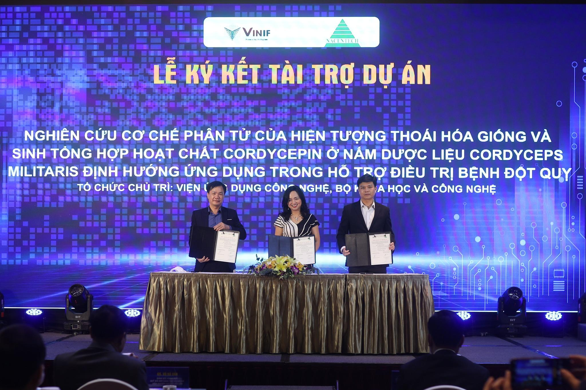

Viện Sinh Hóa Đông Y Dược Ký Kết Tài Trợ

Viện Sinh Hóa Đông Y Dược tiên phong kết hợp tinh hoa Y học cổ truyền với công nghệ sinh học hiện đại, phát triển các giải pháp thảo dược chuẩn hóa nhằm điều trị bệnh mãn tính một cách an toàn, hiệu quả và bền vững. Dựa trên nguyên lý hài hòa âm dương và điều hòa khí huyết, Viện Sinh Hóa Đông Y Dược mang đến liệu pháp điều trị từ gốc rễ, chăm sóc toàn diện sức khỏe thể chất lẫn tinh thần. Với định hướng khoa học hóa Đông y, Viện Sinh Hóa Đông Y Dược không ngừng nghiên cứu và ứng dụng công nghệ tiên tiến để nâng cao chất lượng sống cho cộng đồng.
Sứ Mệnh
Viện Sinh Hóa Đông Y Dược đặt mục tiêu hiện đại hóa Y học cổ truyền thông qua các nghiên cứu khoa học nghiêm ngặt và công nghệ sinh học tiên tiến. Chúng tôi phát triển các sản phẩm thảo dược chuẩn hóa, vừa kế thừa giá trị Đông y truyền thống, vừa đáp ứng các tiêu chuẩn an toàn, hiệu quả và minh bạch trong điều trị bệnh mãn tính. Mục tiêu cuối cùng là góp phần nâng cao sức khỏe cộng đồng một cách bền vững và toàn diện.
Cách Tiếp Cận
- Thảo dược chuẩn hóa: Áp dụng quy trình chuẩn hóa dược liệu nhằm kiểm soát chặt chẽ hàm lượng hoạt chất sinh học, độ ổn định và tiêu chuẩn an toàn vệ sinh, từ khâu trồng trọt đến chế biến.
- Nghiên cứu hiện đại: Ứng dụng công nghệ sinh học phân tử để khám phá cơ chế tác dụng ở mức tế bào và gene. Thực hiện nghiên cứu tiền lâm sàng và lâm sàng nhằm chứng minh hiệu quả điều trị và tính an toàn trên cơ sở khoa học.
- Liên kết ba chiều: Thiết lập mô hình hợp tác chặt chẽ giữa Viện nghiên cứu – Bệnh viện – Doanh nghiệp, tạo cầu nối chuyển giao tri thức từ phòng thí nghiệm đến cộng đồng, đảm bảo các kết quả nghiên cứu được ứng dụng thực tế vào chăm sóc sức khỏe.
Hoạt động nghiên cứu
- Phát triển công nghệ chiết xuất và chuẩn hóa dược liệu
- Đánh giá tác dụng sinh học bằng mô hình tế bào & động vật
- Ứng dụng hệ gen, phân tích omics và trí tuệ nhân tạo trong nghiên cứu y dược
- Hợp tác khoa học trong và ngoài nước để chuyển giao công nghệ
👉 Xem chi tiết các đề tài, công bố khoa học và hợp tác tại Dự án nổi bật.
Dịch vụ khoa học
- Kiểm nghiệm chất lượng và chuẩn hóa dược liệu
- Tư vấn phát triển sản phẩm Đông y theo hướng hiện đại hóa
- Hỗ trợ xây dựng hồ sơ đăng ký thuốc, thực phẩm bảo vệ sức khỏe
- Tư vấn chuẩn bị đề xuất nghiên cứu khoa học, luận văn, công bố khoa học trong lĩnh vực Y Sinh
- Đào tạo – tập huấn chuyên đề về y học cổ truyền và sinh hóa y dược
Liên hệ nhanh
📍 Địa chỉ: Khu tái định cư, P. Quyết Thắng, T. Thái Nguyên
📧 Email: vs.hd@vshdongyduoc.org
📞 Điện thoại: +84 938 575 161